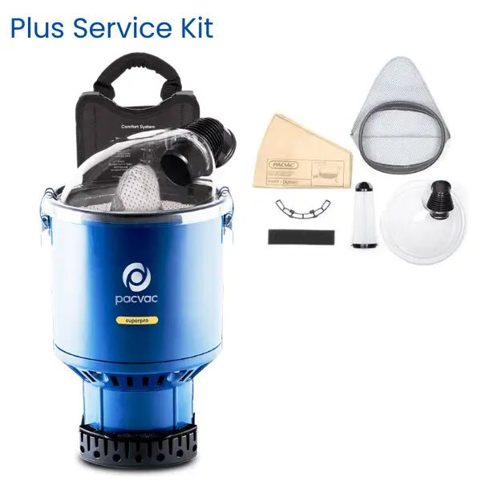
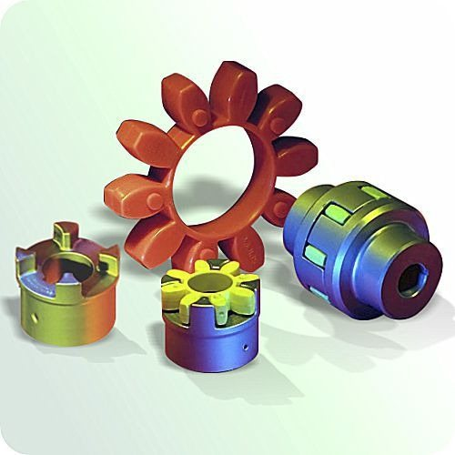

Power cuts in Egypt: backup generators, ATS and UPS that keep you open
Load shedding stops lines, spoils stock and closes tills. A correctly sized generator, ATS panel and UPS keeps your site running and burns less diesel per hour.
 Fasteners58
Fasteners58 Safety & PPE51
Safety & PPE51 Janitorial & Cleaning35
Janitorial & Cleaning35 Logistics7
Logistics7 Electrical41
Electrical41 Lighting19
Lighting19 Tools & Equipment49
Tools & Equipment49 Abrasives13
Abrasives13 Adhesives, Sealants & Tape16
Adhesives, Sealants & Tape16 Material Handling & Storage23
Material Handling & Storage23 Packaging & Shipping28
Packaging & Shipping28 Plumbing42
Plumbing42 Lubricants & Fluids17
Lubricants & Fluids17 Office & Breakroom39
Office & Breakroom39 Uniforms & Workwear17
Uniforms & Workwear17 Hotel Supplies32
Hotel Supplies32 Kitchen Equipment23
Kitchen Equipment23 Security Equipment14
Security Equipment14 Construction Supplies22
Construction Supplies22 Welding18
Welding18 Cutting Tools & Metalworking17
Cutting Tools & Metalworking17 Hydraulics15
Hydraulics15 Pneumatics15
Pneumatics15 HVAC & Refrigeration15
HVAC & Refrigeration15 Pumps14
Pumps14 Motors & Drives12
Motors & Drives12 Power Transmission21
Power Transmission21 Electronics & Batteries19
Electronics & Batteries19 Fleet & Automotive16
Fleet & Automotive16 Hardware & Building Supplies22
Hardware & Building Supplies22 Paint & Painting Supplies12
Paint & Painting Supplies12 Sealing11
Sealing11 Test & Measurement16
Test & Measurement16 Raw Materials16
Raw Materials16 Outdoor & Landscaping25
Outdoor & Landscaping25 Machinery & Generators14
Machinery & Generators14 Oil & Gas22
Oil & Gas22 Pharma & Labs18
Pharma & Labs18 Schools & Universities21
Schools & Universities21 Marine & Port8
Marine & Port8 Industrial Chemicals14
Industrial Chemicals14 Telecom & Fiber6
Telecom & Fiber6 Furniture & FF&E9
Furniture & FF&E9 Appliances11
Appliances11 Camps & Staff Housing7
Camps & Staff Housing7 Corporate Gifts & Printing7
Corporate Gifts & Printing7 Retail & Store Fit-out7
Retail & Store Fit-out7 Glass, Aluminium & Doors8
Glass, Aluminium & Doors8 Roads, Traffic & Municipal14
Roads, Traffic & Municipal14 Agriculture & Veterinary9
Agriculture & Veterinary9 Sports & Recreation6
Sports & Recreation6 Flooring, Ceilings & Insulation9
Flooring, Ceilings & Insulation9 F&B meals15
F&B meals15 Housekeeping and buffet27
Housekeeping and buffet27 Fashion textiles19
Fashion textiles19 Medical & Lab Consumables22
Medical & Lab Consumables22 Solar & Energy8
Solar & Energy8Bolts, nuts, screws, anchors and washers in every common size, grade and finish.
Short, practical guides by department to help your team order the right item the first time.
 Fasteners
FastenersThe number on a metric bolt head is its property class. In 8.8 the first 8 means a tensile strength of about 800 MPa and the second 8 means it yields at 80% of that. Grade 4.6 suits light fixing, 8.8 is the general structural choice and 10.9 or 12.9 is for high load joints and machinery.
 Fasteners
FastenersThe base material decides the anchor. Solid concrete takes wedge anchors, sleeve anchors and concrete screws. Hollow block and brick need long nylon plugs or chemical anchors with mesh sleeves. Gypsum board needs molly or toggle anchors.
 Fasteners
FastenersWood screws have a coarse thread and a smooth shank. Chipboard screws are threaded almost to the head for MDF and board. Self-tapping screws cut their own thread in thin metal, and self-drilling (Tek) screws drill and tap steel up to about 6 mm in one go.
 Electrical
ElectricalAs a rough guide for copper building wire in conduit at 220 V: 1.5 mm2 for lighting circuits, 2.5 mm2 for socket circuits, 4 mm2 for water heaters and 6 mm2 or more for AC units and sub-panels. Long runs and hot ceilings need a bigger size.
 Electrical
ElectricalAn MCB protects a circuit from overload and short circuit up to about 63 A. An RCCB trips on earth leakage to protect people and should be 30 mA for sockets and wet areas. An MCCB does the same job as an MCB for bigger currents, from 100 A up, often with adjustable settings.
 Electrical
ElectricalThe first digit is protection against dust and objects, the second against water. IP20 is indoor only, IP44 handles splashes, IP65 is dust tight and resists water jets, IP66 resists heavy jets and IP67 or IP68 can be submerged.
 Lighting
LightingReplace 36 W fluorescent tubes with 18 W LED T8 tubes, 400 W metal halide high bays with 150 W LED, and 50 W halogen spots with 5 to 7 W GU10. The energy saving usually pays for the lamps within the first year of daily use.
 Lighting
LightingTypical targets are 100 lux for corridors and stores, 200 lux for warehouses, 300 lux for classrooms, 500 lux for offices and workshops, and 750 lux or more for inspection and fine assembly.
 Safety & PPE
Safety & PPEEN 388 gloves show four or five ratings. The letter at the end (A to F) is the cut level from the TDM test. Level A or B suits general handling, C for sheet metal and glass, and D to F for sharp blades and metal stamping.
 Safety & PPE
Safety & PPEFFP1 is for nuisance dust, FFP2 for cement, wood and most construction dust, and FFP3 for fine hazardous dust such as silica. For paint, solvents or chemicals you need a half mask with the right gas filter, not a dust mask.
 Safety & PPE
Safety & PPEDry powder (ABC) covers solids, liquids and gases, so it is the default for warehouses, vehicles and general areas. CO2 is for electrical panels and server rooms because it leaves no residue. Use wet chemical (class F) near deep fryers.
 Safety & PPE
Safety & PPESB is a protective toe cap only. S1 adds antistatic and energy absorbing heel, S1P adds a puncture-resistant midsole, S2 is water resistant and S3 is water resistant with a puncture-resistant sole. SRC means slip tested on tiles and steel.
 Safety & PPE
Safety & PPEAbove 2 m you need a full body harness, a shock-absorbing lanyard or a retractable block, and an anchor point rated for at least 12 kN. Waist belts are only for positioning, never for stopping a fall.
Janitorial & CleaningUse one colour per area so cloths and mops never move germs from toilets to kitchens. A common system is red for toilets and urinals, yellow for washroom basins and surfaces, blue for general areas and offices, and green for kitchens and food areas.

Janitorial & CleaningConcentrated cleaners cut cost per litre by up to 70% when diluted correctly. A typical neutral floor cleaner is used at 1:100, a degreaser at 1:20 to 1:50 and a disinfectant at the contact time on the label.
 Janitorial & Cleaning
Janitorial & CleaningJumbo rolls and centrefeed towels cost less per visit than small rolls and reduce refills. Match refills to the dispenser model, because many dispensers only take one core size or fold.
 Tools & Equipment
Tools & EquipmentBatteries are the expensive part, so pick one brand and voltage for the whole team and buy body-only tools after the first kit. 18 V (sometimes sold as 20 V max) covers drills, grinders and saws; 12 V suits light work in tight spaces.
 Cutting Tools & Metalworking
Cutting Tools & MetalworkingHSS bits drill mild steel, cobalt (HSS-Co) bits drill stainless and hard steel, SDS masonry bits drill concrete with a rotary hammer, and tile or glass needs diamond or spear-point bits. Wood bits have a centre spur for clean holes.
 Tools & Equipment
Tools & EquipmentUse fibreglass near electricity, aluminium for light everyday work and steel platform steps in warehouses. Choose a ladder that lets the user work without standing on the top two steps, and look for EN 131 certification.
 Abrasives
AbrasivesThin cutting discs (1 mm) cut fast with little burr, grinding discs (6 mm) remove weld and heavy stock, and flap discs grind and finish in one step. Use INOX discs on stainless so you do not contaminate it with iron.
 Adhesives, Sealants & Tape
Adhesives, Sealants & TapeSilicone stays flexible and resists water, so it suits sanitary joints and glazing, but it cannot be painted. Acrylic is paintable and suits gaps around frames and gypsum. Polyurethane bonds strongly and suits expansion joints in concrete.
 Plumbing
PlumbingPPR is the standard for hot and cold water inside buildings. uPVC is for drainage and cold pressure mains. HDPE suits buried water mains and irrigation. Galvanised or black steel is used for fire fighting and older systems.
 Plumbing
PlumbingBall valves open fully with a quarter turn and are the default for isolation. Gate valves suit large mains that rarely operate. Butterfly valves save space on big pipes, check valves stop backflow and pressure reducing valves protect fixtures.
 Pumps
PumpsYou need two numbers: flow (how many m3 per hour) and head (how many metres the pump must lift plus pipe losses). A booster for a 10 floor building might need 6 m3/h at 50 m head. Send us the building height, number of units and pipe size and we size it for you.
 HVAC & Refrigeration
HVAC & RefrigerationAs a rough guide in Egypt, allow about 1 hp for every 10 to 12 m2 of normal room, and more for top floors, west-facing glass, kitchens and server rooms. Inverter units cost more but use 30 to 50% less power in long daily use.
 Material Handling & Storage
Material Handling & StorageBoltless shelving holds hand-loaded cartons up to about 300 kg per shelf. Long span shelving takes bulky items, and pallet racking holds 1 to 3 tonnes per beam pair for forklift use. Measure clear height, aisle width and pallet size first.
 Material Handling & Storage
Material Handling & StoragePolyester slings use a colour per working load: violet 1 t, green 2 t, yellow 3 t, grey 4 t, red 5 t, brown 6 t, blue 8 t and orange 10 t. Choke hitch reduces capacity to 80% and basket hitch doubles it.
 Packaging & Shipping
Packaging & Shipping3 ply (single wall) cartons suit light goods under about 15 kg. 5 ply (double wall) cartons carry 15 to 30 kg and stack better on pallets. 7 ply is for heavy or export loads. Inside dimensions are what matter for fit.
 Packaging & Shipping
Packaging & Shipping17 to 20 micron hand film suits light and medium pallets, 23 micron suits heavy or sharp loads. Machine film is thinner but pre-stretches up to 250%, which saves material on high volumes.
Kitchen EquipmentHACCP kitchens separate tools by food type: red for raw meat, blue for raw fish, yellow for poultry, green for salad and fruit, brown for cooked meat and white for dairy and bakery. The same colours apply to boards, knives and storage containers.
Hotel SuppliesTowel weight is measured in gsm: 450 to 500 gsm is standard for city hotels, 550 to 650 gsm for resorts and suites. Percale sheets with 200 to 300 thread count stay crisp through industrial laundry better than very high thread counts.
Uniforms & WorkwearPolyester-cotton (65/35) twill is the hard-wearing default for coveralls and trousers. 100% cotton is cooler and safer near sparks. Flame resistant fabric is required near hot work, oil and gas, and arc flash risks.
 Welding
WeldingE6013 is the easy all-round electrode for light steel. E7018 is low hydrogen for structural and pressure work and must be kept dry. Use E308L for stainless. For MIG, ER70S-6 wire with argon/CO2 mix gives clean welds on mild steel.
 Lubricants & Fluids
Lubricants & FluidsEngine oil grades like 15W-40 show cold and hot viscosity. Hydraulic oils are sold by ISO VG: 32 for cool climates, 46 is the common choice in Egypt and 68 for hot, heavily loaded systems. Grease NLGI 2 suits most bearings; EP grease handles shock loads.
 Power Transmission
Power TransmissionOn a deep groove bearing like 6205-2RS, 6 is the type, 2 the series and 05 times 5 gives a 25 mm bore. 2RS means rubber seals on both sides and ZZ means metal shields. C3 is extra internal clearance for hot running motors.

Power TransmissionClassic V-belts are sections A, B, C and D with a number for length in inches, like B52. Narrow wedge belts (SPA, SPB, SPZ) carry more power in less space. Cogged belts (AX, BX) bend around small pulleys and run cooler.
 Motors & Drives
Motors & DrivesYou need power in kW, speed (2 pole about 2900 rpm, 4 pole about 1450 rpm), voltage, mounting (B3 foot, B5 flange, B14 face) and frame size so it fits the existing base. IE3 efficiency motors pay back quickly on machines running all day.
 Hydraulics
Hydraulics1SN has one wire braid for medium pressure, 2SN has two braids for most mobile equipment up to about 400 bar in small sizes, and 4SH spiral hose handles high pressure and impulse on excavators. Size is the inside diameter in sixteenths of an inch.
 Pneumatics
PneumaticsSize a compressor for the total air demand of your tools in litres per minute plus about 30%. Screw compressors suit continuous plant use; piston compressors suit workshops with stop and start demand. Fit a dryer and filter regulator to protect tools.
 Sealing
SealingNon-asbestos fibre sheet suits water, steam and oil at moderate pressure. Spiral wound gaskets suit high pressure and temperature flanges in oil and gas. For O-rings, NBR resists oil, EPDM resists water and steam, and Viton (FKM) resists heat and fuels.
 Paint & Painting Supplies
Paint & Painting SuppliesSteel needs surface prep, a rust-inhibiting primer and a top coat: alkyd for light duty, epoxy plus polyurethane for factories and coastal sites. Walls need putty, a sealer and two coats of emulsion; use washable or anti-bacterial emulsion in corridors and hospitals.
Construction SuppliesOrdinary Portland cement 42.5 is the general choice. Use sulphate resistant cement for foundations in salty soil and near the sea. Order ready-mix by grade (C25, C30) and add plasticiser rather than extra water to improve workability.
 Construction Supplies
Construction SuppliesCup lock and ringlock systems are faster to erect than tube and coupler and need fewer loose parts. Every working platform needs full boarding, guard rails at about 1 m, a mid rail and toe boards, plus a tag showing it was inspected.
 Office & Breakroom
Office & Breakroom80 gsm A4 is the standard for printers and copiers; 70 gsm is cheaper for internal use. Store paper flat in its wrapper away from humidity. Compatible toners save money, but buy from a source that replaces any cartridge that leaks or streaks.
 Medical & Lab Consumables
Medical & Lab ConsumablesNitrile examination gloves suit most clinical and lab work and avoid latex allergies. Latex gives the best fit and feel but some staff react to it. Sterile surgical gloves are sized by number (6.5 to 8.5) and used for procedures and cleanrooms.
 Pharma & Labs
Pharma & LabsThe ISO class of the room decides the gowning: grade C and D need coveralls, hoods, overshoes and gloves, while grade A and B need sterile, low-linting garments, sterile gloves and masks. Wipes should be polyester knit with sealed edges.
 Test & Measurement
Test & MeasurementLook at the CAT rating first: CAT III 600 V for building panels, CAT IV for incoming supply and outdoor work. True RMS meters read correctly on inverters, LED drivers and VFDs. Clamp meters measure current without breaking the circuit.
 Security Equipment
Security EquipmentUse 4 MP cameras for general areas and 8 MP or varifocal lenses where you need faces or number plates. IP cameras with PoE switches cut cabling. Plan about 1 TB of storage per camera for 30 days of continuous recording at good quality.
 Solar & Energy
Solar & EnergyIn most of Egypt, 1 kWp of panels produces about 4.5 to 5.5 kWh a day. Divide your daily use by 5 to estimate panel size. On-grid systems need no batteries and cut the bill; hybrid systems add lithium batteries for backup during cuts.
 Fleet & Automotive
Fleet & AutomotiveMost fleet cars need oil and filter every 5,000 to 10,000 km depending on oil type. Diesel trucks need fuel filters and water separators changed more often in Egypt because of fuel quality. Keep a stock of the fast movers for each model.
 Industrial Chemicals
Industrial ChemicalsKeep pools at 1 to 3 ppm free chlorine and pH 7.2 to 7.6. Calcium hypochlorite 70% is the common shock chlorine; trichlor tablets give slow daily dosing. Clean and disinfect drinking water tanks every 6 months.
 Outdoor & Landscaping
Outdoor & LandscapingUse drip lines for trees, shrubs and planters, and pop-up sprinklers for lawns. Group plants with similar water needs on the same valve. A disc filter at the head and a controller with a rain or season adjustment save a lot of water.
 Electronics & Batteries
Electronics & BatteriesAdd up the watts of everything on the UPS and choose a unit rated about 25% above that. Line interactive units suit PCs and routers; online double conversion units suit servers, medical and lab equipment. Runtime depends on battery size, not UPS rating.
 Oil & Gas
Oil & GasHazardous areas are zoned by how often a flammable atmosphere is present: Zone 0 continuously, Zone 1 likely in normal work and Zone 2 only abnormally. Lights, glands, radios and tools must carry an Ex marking rated for the zone and gas group.
 Furniture & FF&E
Furniture & FF&EFor desk work all day, look for adjustable seat height, lumbar support, a 5-star base and a BIFMA or EN 1335 test. For classrooms, match chair and desk height to age group, and choose stackable chairs for halls and training rooms.
 F&B meals
F&B mealsFor a half-day meeting plan one coffee break per person; for a full day plan two breaks and lunch. Allow about 1.5 bottles of water per person in summer. Confirm final numbers 48 hours ahead and tell us about vegetarian and diet needs.
Load shedding stops lines, spoils stock and closes tills. A correctly sized generator, ATS panel and UPS keeps your site running and burns less diesel per hour.
The right fire extinguishers, alarms, hose reels and signage protect stock and staff and help you pass Civil Defense inspection, for far less than a fire costs.
IP cameras, NVR recording and access control stop shrinkage and settle disputes fast. How to choose cameras, storage, night vision and attendance devices.
We source beyond this catalogue. Tell us what you need and we will quote it.